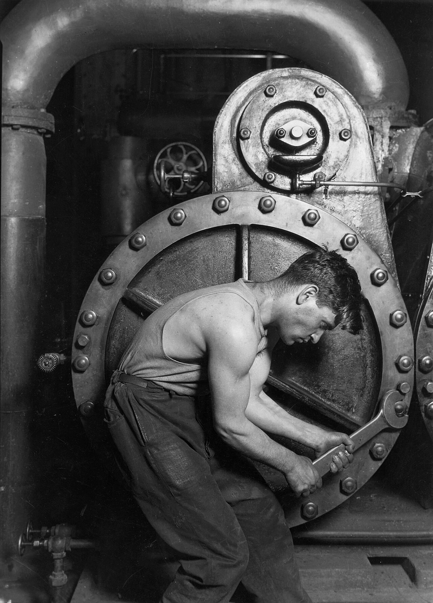

日常摄影实践 · 第 7 讲
拍人最难的部分不在相机上：被拍的人紧不紧张、你着不着急，比光圈和快门加起来更能决定这张照片。
← 上一讲 · 光的方向与质感 · 第 7 讲（本讲） · 下一讲 · 挑片与影调 → · 构图与用光速查
先承认一件事：给家人和朋友拍的照片，失败的原因九成不是技术。眼睛没对上焦、光不好，都是小问题，重拍一张就过去了。真正的杀手是另外两件事——被拍的人紧张，或者你太着急。这两件事会在脸上留下同一种东西：一种「在等拍照结束」的表情。回看的时候，一眼就能认出来。
所以本讲的第一条建议不是相机设置，而是先把气氛松下来：坐下，聊两句，先拍几张不算数的。很多人一见面就喊「看镜头」——那等于把对方推进「表演」的状态，然后再回头抱怨他笑得假。
「不像他」这三个字，是家人照片最常收到的评语。它很少是技术问题。多数时候是这三件事：机位太高（你站着，镜头在俯视他）、焦点没落在眼睛上、对方一直在等你拍完。前两个是手艺，后面那一个是关系。所以这一讲会一半讲技术、一半讲怎么跟人相处——说到底，它们是一回事。
先把「松下来」这件事具体化。下面四步，第一次拍就能照做：
开场的四步：
十分钟后你会有一堆废片，其中两三张是真的。那些「真的」几乎都出现在第三分钟以后。
关于「该说什么、别说什么」，本讲后面有一整节专门讲。现在先记住一件事：不要一上来就喊「看镜头」。
接下来是技术，第一条也是最没有商量余地的一条：人脸上最清楚的地方必须是眼睛。
人看一张脸只看两样东西：眼神和嘴角。眼睛一旦是软的，整张照片在别人眼里就只剩下「拍糊了」三个字。这点和拍风景完全不同——风景糊了只是不够锐，人像的眼睛糊了，照片就不成立了。后期也救不回来：那里根本没有留下信息，锐化只会让噪声更清楚。
所以拍人时，对焦点只有一个默认答案：离你最近的那只眼睛。手机上的三个动作：
还有一个顺带的好处：轻点脸，同时也等于告诉相机「脸应该有多亮」。手机的对焦和测光是同一个动作的两个结果（第 1 讲里那个小太阳）。所以点住人脸之后如果脸还是暗的，就把小太阳往上拉——这两步总是连着做。
拍人最常见的坏习惯：手机举在胸口或眼睛前面。这样镜头就比对方的眼睛高出一截，画面里那张脸于是带上一种「从上面看下来」的味道——人显小、显没底气、下巴显短。改起来不需要任何技巧：把手机压到对方眼睛的高度。
拍孩子，就得蹲下去，甚至坐在地上。孩子的眼睛在离地一米左右的地方，你站着拍，永远是俯视。蹲下来，你才第一次和他在同一个高度看世界——这个改变在照片里立刻看得出来。拍坐在椅子上的长辈、躺在床上的老人、餐桌边的每一个人，道理都一样：先看对方的眼睛在哪，再把手机降到那里。
还有一件事值得想：高角度俯拍显小，低角度仰拍显大。想把人拍得温顺一点、安静一点，就稍微高一点；想把孩子拍得神气、把长辈拍得庄重，就稍微低一点，让他从画面上「压」下来。所谓「知道自己在做什么」，指的就是这个。
人一站到镜头前，第一个不知道该往哪放的部位就是手。而「自然一点」这四个字，是全世界最没用的一句指导——对方根本不知道具体该动哪里，只会更僵。
有用的做法是给一个具体动作：端着一只杯子、摸一下头发、抱着靠垫、手插在口袋里、手搭在椅背上、扶着栏杆。手有事做，肩膀和下巴就会跟着松下来，这是身体自己的反应，不用教。一个具体的动作，比说一百遍「放松」管用。
第二个动作是侧身：让人不要正对镜头，身体转开二三十度，脸再转回来一点看向你。正对着镜头拍出来的是证件照——扁、宽、没有厚度。侧过身之后肩线斜了，光就能落在脸的近侧、把远侧留在阴影里，脸立刻有了立体感。
这正是第 6 讲 光的方向与质感 的用法：柔光负责把人拍好看，侧身负责让光有地方落。两件事加在一起，比换一支镜头有用。
「背景太乱」最省事的解法不是把背景虚掉，而是换一个角度。你往旁边挪半步，让垃圾桶从头顶移开，让后面变成一整面墙——五年以后没有人看得出你当时站得多挤。
如果非要虚化又不想穿帮，还有一个笨办法很有效：让背景自己「糊」——找一片暗一点的背景，或者让光从人背后斜射过来（也就是下一节的逆光）。
最实用的一条：用 iPhone Air 拍人，尽量切到 2×。它是那颗 26 mm 镜头切中间一块出来的 1200 万像素、等效 52 mm（Apple 技术规格），画质扎实，而且比 1× 更不容易把脸拍变形，更接近「人眼看到的那个人」。1× 留给环境和全身，半身与特写就切 2×。
Air 的新一代人像拍完还能改焦点和景深——虚化没到位不必重拍，回看时再点一下。新一代摄影风格里的「珠光」会让肤色亮一些，拍人可以先用它。
暗光或逆光里拍人，换 Osmo Pocket 4：1 英寸传感器配 f/2.0 是真的光学虚化，不是算出来的；再吸上磁吸补光灯（三档亮度与色温，见 DJI 官方）——比事后修图省事。三轴云台还让「边走边聊边拍」这件事真的可行。
拍人挑光，标准只有一条：照在脸上的光要柔和。柔和的意思是光源面积大、光从四面八方漫过来，脸上不会出现硬的阴影边界。阴天、窗边、树荫底下、太阳落山前后的那半小时，都是免费的柔光箱——这些场合你几乎什么都不用做，脸自己就好看。
最麻烦的是正午的顶光：太阳在头顶，眼窝陷进阴影、鼻子下面压着一道黑影，人看起来又累又凶。这时候换个方向（让人转向阴影那一侧，或者转身面对窗户）、让人稍微抬一点头，或者干脆等一等——等一片云过来，或者等太阳压低。
窗边有一条很实用的做法：让人面对着窗站，你站在他和窗之间、偏一点的角度。窗户就是个免费的柔光箱，脸被大面积的光照亮，阴影软。反过来，你背对窗站，拍出来的就是「脸黑、背景白」。
逆光（光源在人背后）迟早会遇上——黄昏、海边、门口、逆光的落地窗。这时没有标准答案，只有两条路，先选一条：
+0.7 到 +1 档才够；太阳越强、背光越狠，要加得越多。代价是背景跟着变亮，天空可能白掉一片——这就是选择本身：想保住脸，就得交出天空。（小太阳怎么拖、怎么长按锁定，见 第 1 讲。）最后强调一句：拍人最常见的失败，不是加错了曝光，而是不敢加，结果交出去一张脸黑了一半的照片。要加就加，别怕。
合影要的东西和单人照正好相反。单人照可以只让眼睛清楚、背景全糊；合影要的是所有人都清楚——所以要收小光圈（有光圈就收到 f/5.6 以上；用 iPhone Air 就把新一代人像关掉、退到 1×）。手机的光圈通常是固定的，于是你真正能做的是这三件事：
iPhone Air 只有一颗 26 mm 镜头，没有超广角，所以想装下更多人只有一个办法：你往后退，同时把镜头切回 1×。退到没地方退了，再考虑换机位，或者干脆分两张拍。
下面这些句子可以直接说出口。它们的共同点是：可执行、给对方留了余地、听起来不像命令。
可以照着念的六句：
反过来，下面这几句几乎一定会帮倒忙。左列是常见说法，右列是换成什么：
| 别这么说 | 为什么不行 | 换成 |
|---|---|---|
| 「看镜头」 | 把人推进「表演」状态，表情立刻僵住，笑也变成摆的 | 「随便聊点什么都行，我在旁边按几张」 |
| 「自然一点」 | 这是一句没法执行的要求——对方不知道具体该动哪里 | 「手搭在椅背上，肩膀松下来」 |
| 「笑一个」 | 命令式的笑只有嘴角在动，眼睛不参加，一眼就假 | 「刚才那句再说一遍」 |
| 「别动，马上好」 | 让人绷住不敢动，越等越僵 | 「你继续，我随手拍」 |
| 「头抬一点、往左、下巴收一下」 | 一句话三个指令，人记不住，只会更紧张 | 一次只说一件事，说完按两张 |
还有一条节奏上的建议：说少一点。你每说一句，对方就会重新调整一次姿势；说五句，人就成木偶了。真正的节奏是——给一个指令，按两张，看一眼，再说下一句。
想让真人给你挑毛病，中文社区里 图虫 发片求点评的氛围相对友好。（不过发之前，先看下一节。）
拍家人是安全的：他们知道你在拍，也知道照片会去哪。但镜头一旦越过家人，事情立刻变了——街上的陌生人、别人的孩子、饭馆里对面那张桌。这一节不是「不许拍」，而是讲按快门之前该想什么。
先看两张一百年前的作品。多萝西娅·兰格（Dorothea Lange）1936 年在大萧条中的加州移民营拍下这张《移民母亲》。她先和这位母亲说话——问她和孩子多大、吃什么、在这里待了多久——然后一次比一次靠近，连拍了几张。据当时的记载，她没有让谁摆姿势，也没有搬动任何东西。照片里没有额外的灯，也没有长焦躲在远处：靠的是靠近、等一个表情、和一段真的对话。
还有一个细节值得停一下。兰格自己后来记下：她听了这位母亲的讲述，却没有问她的名字。名字是四十多年以后（1978 年）才被大家知道的——弗洛伦斯·欧文斯·汤普森。这不是要指责谁，而是提醒你一件事：一张照片把一个人变成「题材」，是可以发生得非常自然的。 拍家人之前，这一点最该记着。
刘易斯·海因（Lewis Hine）1920 年拍下这位在发电站拧扳手的机修工。他拍工人、也拍童工，是为了拿去推动劳工立法——照片是证据。他的方法同样简单：不打断对方的工作，等对方弯下腰、扳手卡上螺母的那一瞬间再按。照片里没有被摆出来的「劳动者形象」，只有一个真的在用力的身体。

这两张放在一起，说明的正是本讲一直在说的事：把人拍得有尊严、有力量，靠的是光、距离和时机，不是器材。 兰格用的是一台当时常见的相机，海因的光来自厂房现成的顶灯和侧面的窗户；两个人都在自然光里、用普通的机器，等到了那一刻。他们要做的只有三件事——走近、等对的一刻、把对方当成一个人而不是一个题材。
纪实摄影的传统（兰格、海因，一直到今天 马格南图片社 那一代摄影师）常常被拿来当成「可以随便拍」的理由。它真正的用处正好相反：它让你看见一张陌生人的人像能有多重，所以才知道按快门之前要负什么责。想看得更完整，国际摄影中心的展览 是现成的入口——看一整组，不要只看一张。
落到今天，就是下面这几条。它们都不难，难的是每次都做到：
这一节最重要的一句话放在最后：一张照片拍的是别人的样子，但那永远是别人的东西。
前面几节的判断，压缩成一张表。拍之前扫一眼，比临场想快得多：
| 场合 | 站哪、什么机位 | 怎么测光 | 注意什么 |
|---|---|---|---|
| 家人日常 （客厅、饭桌、窗边） |
蹲到对方眼睛的高度；站在侧前方，离窗一两米 | 轻点人脸；脸亮就够了，背景暗不用管 | 别用闪光灯直射；先给手找点事；关掉电视，避开头顶灯压在脸上的影子 |
| 逆光合影 （黄昏、海边、门口） |
退一步，让光源落在画面之外；手机略低于眼睛，别仰拍出大鼻子 | 轻点人脸后上拉小太阳加 +0.7~+1 档；或长按锁定再重新构图 |
想剪影就别加、让天空保住；想留脸就必须加；别让光源直射镜头，会起一片雾一样的眩光 |
| 街拍陌生人 | 先站定，别边走边举；观察一会儿，等对方走进你选好的画面 | 点人测光；光线复杂时先把曝光锁住，再等那个动作 | 能问就问；不能问就拍得好看、有尊严；不追、不贴脸；拍完不回头拍第二张 |
| 拍孩子 | 蹲下或坐在地上，镜头和孩子眼睛同高 | 点眼睛；室内靠窗光，再往上补半档到一档 | 用连拍，别指望摆好姿势；快门要够快（1/250 s 以上）才冻得住动作；先征得家长同意 |
1. 给家人拍了一张，回看觉得「说不上哪不好，就是不像他」。你可能犯了哪三个错？
按概率排：(1) 机位太高——你站着举手机，等于在俯视他，人显小、下巴显短；(2) 焦点没落在眼睛上——点在了衣服、背景或脸中间，眼睛是软的；(3) 他一直在等拍照结束——你太着急，没有先聊两句、先拍几张不算数的，手也没地方放。前两个改机位和焦点，第三个改的是你自己。
2. 黄昏海边拍合影，人是黑的、后面的天空很漂亮。你有两条路，分别怎么做、代价是什么？
剪影：不加曝光，让天空保住，人是黑轮廓；代价是脸完全没了，所以轮廓必须好看（侧脸、抬手、牵手）。留住脸：轻点人脸，把小太阳往上推到 +0.7 以上直到脸亮；代价是背景更亮，天空可能白掉。两条路都对，取决于你想说的是「这个黄昏」还是「这些人」。唯一错的做法是既不加曝光、又期待脸是亮的。
3. 街上看到一个有意思的人，你已经把手机举起来了。先问自己什么？
两个问题：「我能不能问一句？被拒绝我接受吗？」和「这张照片里，对方会显得好看、有尊严，还是可笑、狼狈？」 两个都答得上「是」就可以按快门；答不上来就放下手机。顺便回答那个总会冒出来的念头——错过一张照片的代价，远小于让一个人被冒犯的代价。
这一讲哪里没说清？回到 OpenCode 里直接问你的老师（那个正在运行 teach
的 agent）——它比你更懂你的目标，可以为你重新举例、加练，或跳到你想深入的部分。
比如告诉它你要拍的是家里的谁（老人、小孩，还是朋友），它就能把那组引导语换成更适合那个人的说法。
推荐一手资料：
《美国纽约摄影学院摄影教材》
的「人像摄影」部分 —— 本课程的骨干教材，配合本讲读一遍，你会看出哪些判断是通用的、哪些是本讲的补充。
想直接看图，去 马格南图片社的摄影师名录
挑一个人，把他的作品一组一组看完。
图片来源与授权：图片版权说明。
上一讲：第 6 讲 · 光的方向与质感 ·
下一讲：第 8 讲 · 挑片与影调 ·
速查：构图与用光速查表 ·
术语：词汇表